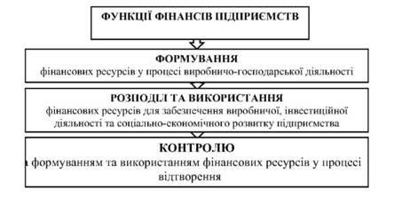
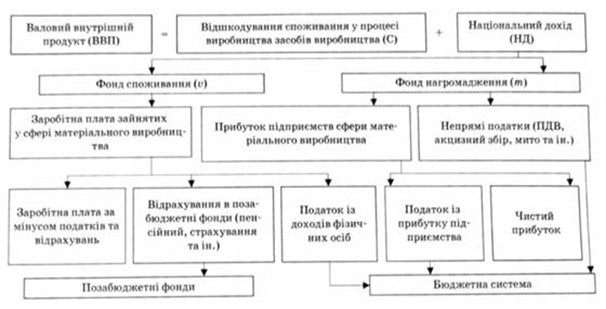

План
1. Сутність фінансів підприємств, принципи їх організації та їх зміст.
2. Функції фінансів підприємств і їх характеристика.
1. Сутність фінансів підприємств, принципи їх організації та їх зміст
У фінансовій системі держави головною, визначальною її ланкою виступають фінанси підприємств. Тому що вони функціонують у тій же сфері суспільного виробництва, де створюються матеріальні блага, валовий внутрішній продукт і національний доход суспільства, а також формується основна частина фінансових ресурсів держави.
Розподіл і перерозподіл матеріальних і духовних благ, які створюються, в грошовій формі здійснюється за допомогою фінансів шляхом створення цільових грошових фондів у відповідних підрозділах (ланках) народного господарства.
Використання фінансів дає можливість підприємствам сфери матеріального виробництва забезпечити безперервність процесу відтворювання, вирішення виробничих, економічних та соціальних задач, формування централізованих і децентралізованих фондів грошових коштів як на рівні держави, так і на рівні господарюючих суб'єктів.
Фінанси підприємств - це економічні відносини, які відображають формування, розподіл та використання грошових фондів і доходів суб’єктів господарювання у процесі відтворення. Таким чином, фінанси підприємств безпосередньо пов’язані з рухом грошових коштів.
Об'єктом фінансів підприємств є грошові відносини, пов'язані з отриманням доходів і накопичень, їх розподілом, формуванням і використанням відповідних фондів грошових коштів.
Суб'єктами є підприємства і організації, установи (банківські та бюджетні), позабюджетні фонди та інші суб'єкти господарювання.
Матеріальною умовою появи і функціонування фінансів є гроші, покладені в основу існування відповідних видів грошових відносин підприємств.
Виникають фінансові відносини на підприємствах у процесі їх створення, здійснення ними виробничо-фінансової діяльності, розподілу доходів і накопичень, формування відповідних грошових фондів.
Таким чином, фінанси підприємств є системою грошових відносин, що виникають у процесі отримання і розподілу грошових доходів і накопичень, формування і використання відповідних фондів грошових коштів.
Фінанси підприємств, з теоретичного погляду, мають наступні ознаки:
1. Функціонують у сфері товарно-грошових відносин.
2. Відображають тільки ті грошові відносини, які можна оцінити у вартісних вимірниках.
3. Обслуговують рух вартості створеного продукту на всіх стадіях відтворювального процесу.
4. Мають свого матеріального носія - фінансові ресурси, які одночасно є об’єктом фінансових відносин.
5. Формують і використовують дохід і фінансові ресурси.
6. Характеризуються різноманітністю та багатогранністю форм прояву, що відображається в системі відносин, які відбивають економічні факти і процеси, що відбуваються на підприємстві.
Зміст фінансів підприємств чітко визначається формуванням і використанням всієї сукупності доходів і фінансових ресурсів в процесі розподілу й перерозподілу валового внутрішнього продукту, тобто фінанси підприємств здійснюють первинний розподіл вартості валового внутрішнього продукту на фонди нагромадження, споживання, відновлення матеріальних елементів процесу виробництва.
Всі доходи суб’єктів господарювання в процесі відтворення поділяються на первинні та вторинні. Останні отримуються в результаті перерозподілу первинних доходів і формуються:
- на підприємствах - у формі прибутку, що залишається в їх розпорядженні;
- у працівників - у формі оплати праці, що залишається після сплати податків та обов’язкових платежів;
- в державі - у формі перерозподілених доходів суб’єктів господарювання до бюджету та до цільових позабюджетних фондів;
- в домогосподарствах - у формі чистої оплати праці, дивідендів акціонерам й учасникам, інших виплат із бюджету та позабюджетних фондів.
Грошові відносини як складові фінансів підприємств:
Сукупність грошових відносин у державі можна розділити на декілька груп:
• грошові відносини, пов'язані з купівлею-продажем товарів;
• грошові відносини, пов'язані з купівлею-продажем послуг;
• грошові відносини, пов'язані з купівлею-продажем робочої сили (з/п);
• грошові відносини, з допомогою яких здійснюється перерозподіл доходів.
Які ж конкретні види грошових відносин включають фінанси?
Перш за все, це грошові відносини підприємств з державою. Не менш вагомими є грошові відносини з приводу використання санкцій і стимулів при виконанні договорів. Значне місце в діяльності підприємств і організації займають грошові відносини з працівниками. Окремо слід виділити грошові відносини держави з населенням. У виробничій та комерційній діяльності значну роль відіграють грошові відносини підприємств зі страховими компаніями, банками. В умовах ринкової економіки важливу роль відіграють грошові відносини у процесі зовнішньо-економічної діяльності.
На рівні підприємств фінансові відносини охоплюють:
• відносини з іншими підприємствами і організаціями з приводу постачання сировини, матеріалів, комплектуючих виробів, реалізації продукції, надання послуг;
• відносини з банківською системою та небанківськими установами з приводу банківських послуг при отриманні і погашенні кредитів, купівлі та продажу валюти та інших операцій;
• відносини зі страховими компаніями і організаціями з приводу страхування активів, комерційних та фінансових ризиків;
• відносини з товарними, сировинними, фондовими біржами;
• відносини з інвестиційними інститутами з приводу розміщення інвестицій;
• відносини з філіалами та дочірніми підприємствами;
• відносини з працівниками з приводу виплати заробітноїnплати, премій, дивідендів;
• відносини з акціонерами (зовнішніми інвесторами);
• відносини з податковою адміністрацією з приводу сплати податків і зборів;
• відносини з аудиторськими фірмами.
Предметом дисципліни «Фінанси підприємств» є грошові відносини, які виникають в процесі господарської діяльності підприємств і пов'язані з формуванням власних і залучених коштів, їх використанням на фінансування витрат і інвестицій підприємства, утворенням і розподілом отриманого прибутку.
В даній дисципліні не вивчаються особливості фінансів інвестиційних фондів, бірж, банків і кредитних установ, страхових організацій, тому що економіко-правові і фінансові основи їх діяльності регулюються спеціальними нормативними актами, знання яких допомагає зрозуміти характер взаємодії підприємств з цими елементами ринкової інфраструктури.
Основи організації фінансів підприємств:
Організація фінансів підприємств – це сукупність форм, методів, способів формування та використання фінансових ресурсів, контролю за їх кругообігом для досягнення економічних цілей згідно з чинними законодавчими актами.
Принципи сучасної організації фінансів підприємств:
1. Принцип плановості забезпечує відповідність обсягу продажу і витрат, інвестицій потребам ринку. Плановість у галузі фінансів виявляється в розробці на основі виробничих показників фінансових планів з визначенням у них фінансових ресурсів в обсягах, необхідних для виконання планів економічного і соціального розвитку підприємств.
2. Принцип демократичного централізму у галузі фінансів виявляється: в централізації державою частини доходів підприємств у централізовані фонди (державний бюджет) шляхом стягнення різних податків і платежів, які встановлюються державою, а розраховуються і сплачуються безпосередньо платниками під контролем держави; у проведенні єдиної політики оподаткування, фінансування, кредитування і розрахунків, з одного боку, і в господарській самостійності здійснення підприємствами виробничо-фінансової діяльності, розподілу і використання отримуваних доходів і накопичень - з іншого.
3. Принцип господарського (комерційного) розрахунку висвітлює основний метод господарювання підприємств, який ґрунтується на порівнянні витрат з результатами діяльності, що передбачає відшкодування витрат за рахунок власних доходів, а також забезпечення рентабельності виробництва. Господарський (комерційний) розрахунок на підприємствах упроваджується шляхом реалізації його принципів: господарсько-оперативної самостійності; самоокупності; матеріального зацікавлення і матеріальної відповідальності; контролю гривнею за результатами діяльності. Найважливішим принципом госпрозрахунку є самоокупність. Він передбачає покриття витрат підприємства власними доходами і отримання накопичень, потрібних для сплати відповідних податків у бюджет, вирішення соціальних питань і матеріального стимулювання працівників підприємства за результатами їхньої праці.
4. Принцип самофінансування виявляється в забезпеченні розширеного відтворення, матеріального стимулювання працівників і вирішенні соціальних питань підприємств за рахунок власних фінансових ресурсів (прибутку, амортизаційних відрахувань тощо). При самофінансуванні не лише відшкодовуються витрати на виробництво і продаж продукції, вносяться платежі до бюджету, вирішуються питання соціального розвитку підприємства і матеріального стимулювання працівників, як при самоокупності, а й фінансуються капітальні вкладення, приріст власних оборотних активів та інші витрати з розширення виробництва за рахунок власних фінансових ресурсів.
5. Принцип фінансового співвідношення термінів забезпечує мінімальну різницю в часі між отриманням і використанням коштів, що особливо важливо в умовах інфляції та зміни курсів валют. При цьому під використанням коштів розуміється і можливість їх збереження від знецінення у разі розміщення в швидколіквідні активи (цінні папери, депозити тощо).
6. Принцип гнучкості (маневрування) забезпечує можливість маневру у випадку недоотримання планових обсягів продажу, перевищення планових витрат із поточної чи інвестиційної діяльності.
7. Принцип мінімізації фінансових витрат означає, що фінансування інвестицій та інших витрат має забезпечуватись «найдешевшим» способом.
8. Принцип раціональності передбачає, що вкладення капіталу в інвестиції мусить мати достатньо високу ефективність і забезпечити мінімальні ризики.
9. Принцип фінансової стійкості означає забезпечення фінансової незалежності, тобто дотримання критичної межі частки власного капіталу в загальній його величині і платоспроможність (solvency) підприємства, тобто його можливість і здатність своєчасно й повністю виконувати свої фінансові зобов’язання перед внутрішніми та зовнішніми партнерами, а також державою.
10. Принцип зацікавленості в результатах діяльності підприємства означає, що форми, системи та розмір оплати праці, стимулюючі, компенсаційні виплати та інші види доходів самостійно встановлюються господарюючим суб’єктом.
11. Принцип матеріальної відповідальності проголошує, що за порушення договірних, кредитних, податкових зобов’язань підприємство несе матеріальну відповідальність у вигляді штрафів, пені, неустойки; застосування цього принципу залежить від правового поля, в якому функціонує підприємство.
12. Принцип створення достатніх фінансових резервів забезпечує захищеність підприємства в умовах недосконалого ринку, інфляції, нерозвинутого правового поля, фінансових та інших страхових ризиків; з розвитком держави, підприємств і ринкових відносин, системи фінансового менеджменту та поліпшення економічного стану в країні значення цього принципу має поступово нівелюватися.
13. Принцип здійснення контролю за фінансово-господарською діяльністю передбачає розвиток внутрішнього та зовнішнього вартісного контролю; в Україні істотного розвитку набув зовнішній контроль за виконанням податкових зобов’язань і використанням державних коштів, а інші види фінансового контролю потребують розвитку й удосконалення.
2. Функції фінансів підприємств і їх характеристика
Функції фінансів підприємств - це певні взаємопов'язані групи, що об'єднують фінансові трансакції, які виконуються підприємствами.
В більшості літературних джерел функції фінансів підприємств поділяють на чотири: формування, розподіл, використання, контролю (рис. 1). У економічній літературі виділяють дві ключові функції фінансів підприємств:
1. Розподільча функція фінансів полягає в тому, що за допомогою фінансового механізму розподіляється та перерозподіляється вартість національного доходу між різними суб'єктами господарювання та напрямами цільового використання.
Кожен вид фінансового розподілу обслуговується різними ланками фінансової системи: внутрішньогосподарський - фінансами підприємств, міжгалузевий та міжтериторіальний - державним бюджетом, цільовими державними фондами.
Суб'єктами розподільної функції фінансів є юридичні та фізичні особи, які є учасниками відтворювального процесу (держава, підприємства, організації, установи, громадяни), в розпорядженні яких формуються фонди цільового призначення.
Розподільна функція охоплює дві стадії: первинний розподіл національного доходу (НД) і вторинний розподіл (перерозподіл) НД.
Первинні доходи в свою чергу поділяються на дві групи:
1) заробітна плата робітників, службовців, доходи селян, зайнятих у сфері матеріального виробництва;
2) прибуток підприємств сфери матеріального виробництва формування і розподіл.
Слід зазначити, що внаслідок первинного розподілу НД не утворюються суспільні грошові фонди для забезпечення економічних, соціальних і політичних функцій держави, здійснення соціального захисту населення. Такі суспільні державні грошові фонди створюються шляхом вторинного розподілу (перерозподілу) національного доходу. В результаті перерозподілу формуються вторинні доходи. Це доходи, одержані в галузях невиробничої (бюджетної) сфери: освіта, медичне обслуговування, наука, правоохоронна система, оборона та ін.
Співвідношення обсягу бюджету і ВВП - важлива економічна проблема, зумовлена особливостями функціонування моделі економіки конкретної держави. Залежно від соціальної навантаженості бюджету на сьогодні в світі є три основні моделі перерозподілу ВВП через бюджет:
- американська, коли через бюджет перерозподіляється 30-35 % ВВП;
- західноєвропейська, за якої через бюджет перерозподіляється 40-50 % ВВП;
- скандинавська, коли через бюджет перерозподіляється 60-65 % ВВП.
У більшості країн перерозподіл здійснюється від 30 до 50 % ВВП.
Схему розподільної функції фінансів наведено на рис. 2.
Завдяки розподільчій функції забезпечується оптимальне поєднання різних інтересів в Україні (загальнодержавних, колек¬тивних, особистих) і створюються стимули для ефективного господарювання.
2. Контрольна функція перебуває в тісному зв'язку і взаємообумовленості з розподільчою функцією.
Контрольна функція фінансів підприємств виявляється в контролі за виконанням підприємствами обсягів виробництва і продажу продукції, отриманням прибутку, за формуванням і цільовим використанням фондів грошових коштів, фінансових ресурсів підприємств.
Контрольна функція фінансів спрямована на вирішення таких основних завдань:
• пошук резервів збільшення доходів, прибутку, підвищення рентабельності та платоспроможності;
• своєчасне виконання фінансових зобов'язань перед суб'єктами господарювання, бюджетом, банками;
• мобілізація фінансових ресурсів у обсязі необхідному для фінансування виробничого й соціального розвитку;
• збільшення власного капіталу;
• ефективний цільовий розподіл та використання фінансових ресурсів.
Об'єктами контрольної функції фінансів є фінансові показники діяльності підприємств, організацій, установ.
Види фінансового контролю:
- загальнодержавний, що проводять органи державної влади та управління (податкові органи, казначейство, контрольно-ревізійні управління, міністерство фінансів та ін.);
- внутрішньогосподарський, який здійснюють фінансові служби підприємств та установ;
- незалежний, що виконують аудиторські фірми.
Фінансовий контроль охоплює всі сторони господарської діяльності підприємств, включаючи розподіл, перерозподіл, утворення і використання всіх видів ресурсів.
Фінансовий контроль - це перевірка спеціально уповноваженими органами форм і змісту фінансових відносин та порядку здійснення фінансово-господарської діяльності. Фінансовий контроль може бути державний, незалежний (у формі аудиту), внутрішньогосподарський, який проводиться бухгалтерією, фінансовим відділом у формі:
- рахункової перевірки;
- тематичної перевірки;
- економічного аналізу.
Мета контролю - перевірка збереження і правильності витрачання матеріальних і фінансових ресурсів, згідно з чинним законодавством і нормативними документами, викриття і попередження порушень в їхньому використанні.
Контроль за господарсько-фінансовою діяльністю підприємств здійснюється як органами управління, так і відомствами всіх рівнів за різними напрямками:
- державними структурами - по лінії отримання обсягів прибутку, правильності вирахування і своєчасності сплати податків і платежів до бюджету та централізованих позабюджетних фондів;
- установами банків - при кредитуванні і здійсненні розрахунків підприємств тощо.
При цьому здійснення контролю за діяльністю підприємств пов'язано зі застосуванням різного роду санкцій і стимулів, які сприяють покращенню діяльності підприємств і підвищенню ефективності їхньої роботи.
Фінансовий контроль за господарською діяльністю підприємств і господарських організацій обумовлюється необхідністю співвідношення затрат з результатами виробництва шляхом грошей, вартісного (грошового) обліку.
Найбільший ефект він дає на базі господарського розрахунку, при якому витрати підприємств прямо залежать від їх доходів, а фінансовий стан - від результатів діяльності. Цим самим, фінансовий контроль сприяє зміцненню госпрозрахунку, доходності та ефективності роботи підприємств.
Крім згаданих і розкритих нами двох головних функцій: розподільчої і контрольної, в економічній і фінансовій літературі наводяться і інші функції фінансів підприємств: забезпечуюча, стимулююча, регулююча, формування грошових фондів і їх використання та ін. Ці функції не мають свого економічного змісту та самостійності. Вони виступають кінцевою дією, метою, частіше всього, розподільчої функції.
Питання для самоконтролю:
1. Дайте характеристику фінансам підприємства.
2. Назвіть ознаки фінансів підприємства.
3. Наведіть види фінансових відносин.
4. Які принципи сучасної організації фінансів підприємств Ви знаєте?
5. Розкрийте особливості розподільчої функції фінансів.
6. Охарактеризуйте контрольну функцію фінансів.
Література:
1. Аранчій В.І. Фінанси підприємства: навчальний посібник / В.І. Аранчій, В.Д. Чумак, Л.В. Бражник. – Полтава: РВ ПДАА, 2018., с. 11-17.